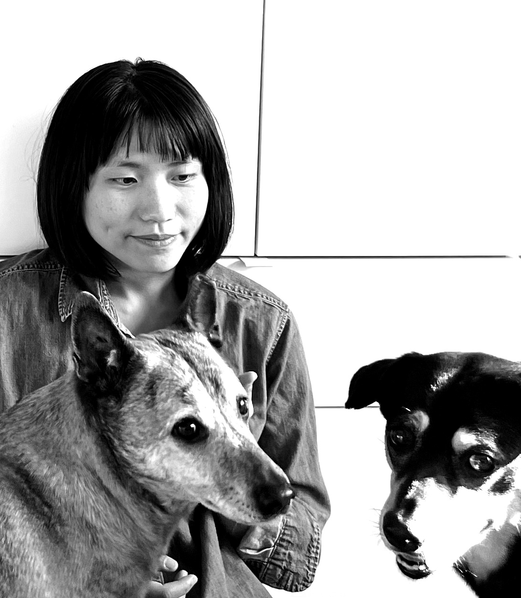

BIO
Chen Peng 彭 宸 is an artist and educator from Taiwan based in Hoboken, New Jersey. Her paintings explores intimate domestic landscapes shaped by everyday objects, memories, and companionship with animals.
Peng has exhibited in New York, Boston, Cleveland, and Taipei, and has participated in artist residencies at the Studios at MASS MoCA, the Vermont Studio Center, and the Wassaic Project. Her work has been featured in The Brooklyn Rail, Tussle Magazine and New American Paintings, and is included in the collections of Case Western Reserve University, Cleveland Clinic, and the Fidelity Corporate Art Collection.
Peng holds an MFA in Painting from Boston University and a BFA from the Cleveland Institute of Art. Before moving to the United States, she earned a BA in Philosophy from National Taiwan University. Since 2018, she has been engaging in animal rights advocacy through visual education projects with the Taiwan Animal Equality Association.
CONTACT
studiochenpeng@gmail.com
instagram: @chenpenguinn
